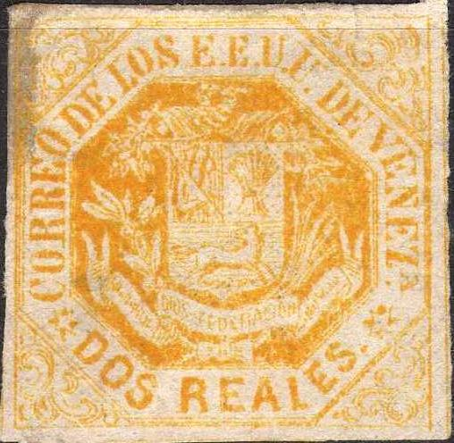
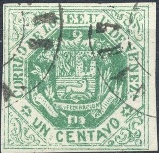
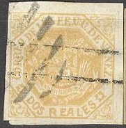
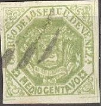

{kind=link}

Presumably genuine stamps
Return To Catalogue - Venezuela - miscellaneous
Note: on my website many of the
pictures can not be seen! They are of course present in the
catalogue;
contact me if you want to purchase it.
Check out the excellent website on Venezuelian stamps, its locals and forgeries http://www.mystamps.net, made by Williams Castillo. I would like to thank him for setting some of the information available to me.

Presumably genuine stamps


This cancel with dots was never used in Venezuela, any stamps with such postmarks can easily be recognized as forgeries. The banner with "DIOS Y FEDERACION" is too short (it should extend beyond the shield, but in this forgery it doesn't). Fournier also offers these forgeries in his 1914 pricelist as second choice forgeries for 1.25 Swiss Francs (for all 5 values together). They can also be found in 'the Fournier album of philatelic forgeries'.
Forgeries. One of the stamps has a German "ZEITUNGS EXPE.." cancel?
In the above forgeries, the first "E" of "VENEZ" has the same direction as the "NEZ", in the genuine stamps it should be slightly inclined backwards to the "V". Also the colours are wrong in the above specimens. The inscription reads "CORRE ODELO SEE", there is no dot behind the first "E" of "E.E.U.U." and finally there is a hyphen in front of the "C" of "CORRE", which is not present in the genuine stamps. This forgery is the third forgery of the 1/2 c value described in Album Weeds.
There also seems to exist some forgeries with inscription "EEUu" (smaller last "U") and some other forgeries with inscription "ADIOS" instead of "DIOS". Again another forgery has the inscription "SIOS" instead of "DIOS". In again another forgery, the words "DIOS Y FEDERACION" are illegable and there is a white space in the lower part of the shield. In the last forgery the thick line in the upper frame is missing, the right side of the cornucopia is missing, the letters "E.E.U.U." are wider and the letters "ON" of "CONDEDERACION" are larger. I have no pictures of the above forgeries.


Dubious stamps, probably forgeries, upper lettering smaller.



Other dubious stamps. Note the "CORREOS DE VENEZUELA
CARACAS" with an empty center on two of the above stamps.

And some 1/2 c stamps that I don't quite trust. They appear to be
VF Cancelled forgeries.


I've been told that the above stamp is a postal forgery, I don't have any further information about this stamp.
More information about these stamps can be found on http://www.mystamps.net/venezuela/identificacion/octagonos01.html (in Spanish).

A page from the Fournier Album. In my view, filled with Spiro
forgeries.
{kind=link}
{kind=link}